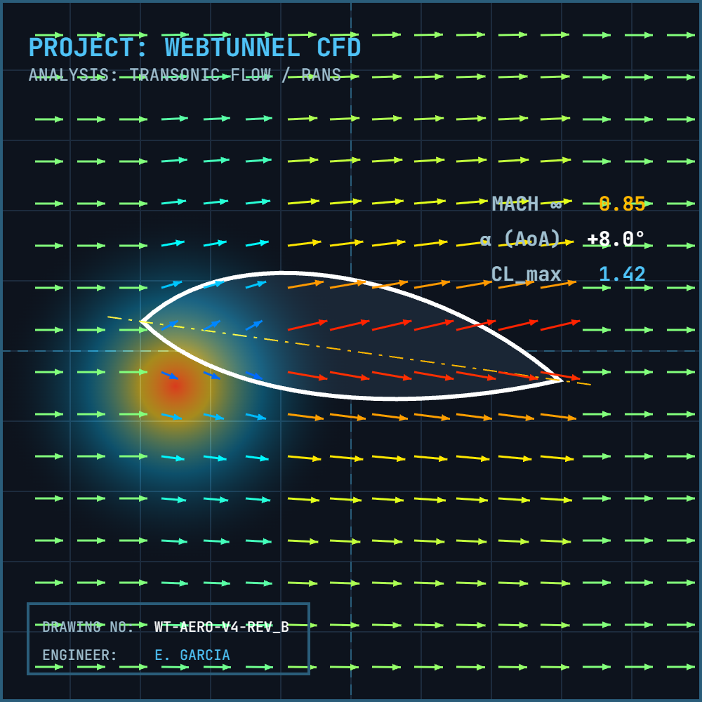

'">WebTunnel CFD
Independent Developer
Mission Control // Solver_Link
ONLINE
WebTunnel v4
Navier–Stokes
Status: Awaiting Command
INITIALIZE
> CORE_LIBS OK
> MODEL LOADED
> WAITING_FOR_INPUT
ID: 884-29-A
Computational Architecture
WebTunnel is a browser-based physics engine that solves the incompressible Navier-Stokes equations in real-time. It balances mathematical precision with computational efficiency through four core pillars:
- Governing Equations (Physics): Implemented the full Eulerian fluid dynamics model, solving for mass conservation and momentum to simulate realistic fluid behavior without plugins.
- Numerical Solvers (Math): Utilized Semi-Lagrangian advection for unconditionally stable transport and Gauss-Seidel relaxation to resolve pressure projection and diffusion steps.
- Memory Optimization (CS): Optimized for JavaScript execution by flattening 2D grid data into 1D Typed Arrays (Float32), ensuring CPU cache locality and zero garbage collection overhead.
- Visualization (Rendering): Built a custom rendering pipeline to map velocity vector fields and density gradients to the HTML5 Canvas in real-time.
Solver Loop Architecture
>> Simulation Kernel
[GRID] Resolution
200 x 200
[DT] Time Step
Fixed (16ms)
[ITER] G-S Steps
15
[MEM] Heap Alloc
Float32Array
Physics Step (dt)
1. ADVECT
SEMI-LAGRANGIAN BACKTRACE
SEMI-LAGRANGIAN BACKTRACE
2. DIFFUSE
VISCOUS FORCES (G-S SOLVER)
VISCOUS FORCES (G-S SOLVER)
3. PROJECT
MASS CONSERVATION (DIVERGENCE FREE)
MASS CONSERVATION (DIVERGENCE FREE)
4. RENDER
DENSITY MAPPING
DENSITY MAPPING
Tech Stack
JavaScript
Navier-Stokes
Linear Algebra
WebGL / Canvas
Outcome
Built a zero-dependency CFD engine running at 60FPS in-browser, demonstrating deep understanding of fluid physics and algorithmic optimization.